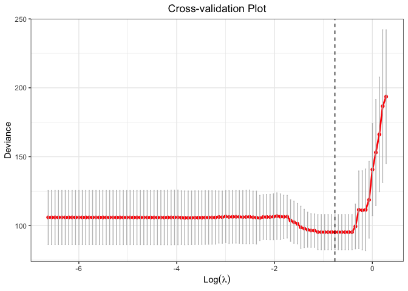
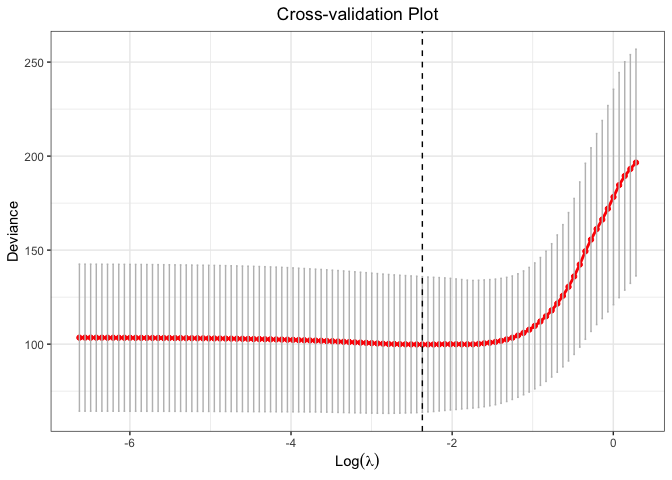

Efficient procedures for constrained likelihood estimation with truncated lasso penalty (Shen et al., 2010; Zhang 2010) for linear and generalized linear models.
Note: this is a repo for the version published on CRAN. Please check chunlinli/glmtlp for new features such as constrained likelihood inference, regression on summary data, memory efficiency, Gaussian graphical models, and more.
Installation
You can install the released version of glmtlp from CRAN with:
install.packages("glmtlp")Examples for Gaussian Regression Models
The following are three examples which show you how to use glmtlp to fit gaussian regression models:
library(glmtlp)
data("gau_data")
colnames(gau_data$X)[gau_data$beta != 0]
#> [1] "V1" "V6" "V10" "V15" "V20"
# Cross-Validation using TLP penalty
cv.fit <- cv.glmtlp(gau_data$X, gau_data$y, family = "gaussian", penalty = "tlp", ncores=2)
coef(cv.fit)[abs(coef(cv.fit)) > 0]
#> intercept V1 V6 V10 V15 V20
#> -0.009678041 1.240223517 0.883202180 0.725708239 1.125994003 0.981402236
plot(cv.fit)
# Single Model Fit using TLP penalty
fit <- glmtlp(gau_data$X, gau_data$y, family = "gaussian", penalty = "tlp")
coef(fit, lambda = cv.fit$lambda.min)
#> intercept V1 V2 V3 V4 V5
#> -0.009678041 1.240223517 0.000000000 0.000000000 0.000000000 0.000000000
#> V6 V7 V8 V9 V10 V11
#> 0.883202180 0.000000000 0.000000000 0.000000000 0.725708239 0.000000000
#> V12 V13 V14 V15 V16 V17
#> 0.000000000 0.000000000 0.000000000 1.125994003 0.000000000 0.000000000
#> V18 V19 V20
#> 0.000000000 0.000000000 0.981402236
predict(fit, X = gau_data$X[1:5, ], lambda = cv.fit$lambda.min)
#> [1] 0.1906465 2.2279723 -1.4256042 0.9313886 -2.8152522
plot(fit, xvar = "log_lambda", label = TRUE)
# Cross-Validation using L0 penalty
cv.fit <- cv.glmtlp(gau_data$X, gau_data$y, family = "gaussian", penalty = "l0", ncores=2)
coef(cv.fit)[abs(coef(cv.fit)) > 0]
#> intercept V1 V6 V10 V15 V20
#> -0.009687042 1.240319880 0.883378583 0.725607300 1.125958218 0.981544178
plot(cv.fit)
# Single Model Fit using L0 penalty
fit <- glmtlp(gau_data$X, gau_data$y, family = "gaussian", penalty = "l0")
coef(fit, kappa = cv.fit$kappa.min)
#> intercept V1 V2 V3 V4 V5
#> -0.009687042 1.240319880 0.000000000 0.000000000 0.000000000 0.000000000
#> V6 V7 V8 V9 V10 V11
#> 0.883378583 0.000000000 0.000000000 0.000000000 0.725607300 0.000000000
#> V12 V13 V14 V15 V16 V17
#> 0.000000000 0.000000000 0.000000000 1.125958218 0.000000000 0.000000000
#> V18 V19 V20
#> 0.000000000 0.000000000 0.981544178
predict(fit, X = gau_data$X[1:5, ], kappa = cv.fit$kappa.min)
#> [1] 0.190596 2.228306 -1.425994 0.931749 -2.815322
plot(fit, xvar = "kappa", label = TRUE)
# Cross-Validation using L1 penalty
cv.fit <- cv.glmtlp(gau_data$X, gau_data$y, family = "gaussian", penalty = "l1", ncores=2)
coef(cv.fit)[abs(coef(cv.fit)) > 0]
#> intercept V1 V3 V4 V5 V6
#> -0.01185622 1.16222899 -0.06606911 -0.08387185 -0.06870578 0.79106593
#> V8 V9 V10 V11 V14 V15
#> 0.01136376 0.01038075 0.62580166 0.10858744 0.08533479 1.04737369
#> V19 V20
#> -0.11859786 0.86736897
plot(cv.fit)
# Single Model Fit using L1 penalty
fit <- glmtlp(gau_data$X, gau_data$y, family = "gaussian", penalty = "l1")
coef(fit, lambda = cv.fit$lambda.min)
#> intercept V1 V2 V3 V4 V5
#> -0.01185622 1.16222899 0.00000000 -0.06606911 -0.08387185 -0.06870578
#> V6 V7 V8 V9 V10 V11
#> 0.79106593 0.00000000 0.01136376 0.01038075 0.62580166 0.10858744
#> V12 V13 V14 V15 V16 V17
#> 0.00000000 0.00000000 0.08533479 1.04737369 0.00000000 0.00000000
#> V18 V19 V20
#> 0.00000000 -0.11859786 0.86736897
predict(fit, X = gau_data$X[1:5, ], lambda = cv.fit$lambda.min)
#> [1] 0.07112074 2.17093497 -1.09936871 0.46108771 -2.25111685
plot(fit, xvar = "lambda", label = TRUE)
Examples for Logistic Regression Models
The following are three examples which show you how to use glmtlp to fit logistic regression models:
# Cross-Validation using TLP penalty
cv.fit <- cv.glmtlp(bin_data$X, bin_data$y, family = "binomial", penalty = "tlp", ncores=2)
coef(cv.fit)[abs(coef(cv.fit)) > 0]
#> intercept V6 V20
#> -0.1347141 0.8256183 0.9940325
plot(cv.fit)
#> Warning: Removed 98 rows containing missing values or values outside the scale range
#> (`geom_line()`).
#> Warning: Removed 98 rows containing missing values or values outside the scale range
#> (`geom_point()`).
# Single Model Fit using TLP penalty
fit <- glmtlp(bin_data$X, bin_data$y, family = "binomial", penalty = "tlp")
coef(fit, lambda = cv.fit$lambda.min)
#> intercept V1 V2 V3 V4 V5 V6
#> -0.1347141 0.0000000 0.0000000 0.0000000 0.0000000 0.0000000 0.8256183
#> V7 V8 V9 V10 V11 V12 V13
#> 0.0000000 0.0000000 0.0000000 0.0000000 0.0000000 0.0000000 0.0000000
#> V14 V15 V16 V17 V18 V19 V20
#> 0.0000000 0.0000000 0.0000000 0.0000000 0.0000000 0.0000000 0.9940325
predict(fit, X = bin_data$X[1:5, ], type = "response", lambda = cv.fit$lambda.min)
#> [1] 0.42562483 0.89838483 0.09767039 0.90898462 0.20822294
plot(fit, xvar = "log_lambda", label = TRUE)
# Cross-Validation using L0 penalty
cv.fit <- cv.glmtlp(bin_data$X, bin_data$y, family = "binomial", penalty = "l0", ncores=2)
coef(cv.fit)[abs(coef(cv.fit)) > 0]
#> intercept V6 V20
#> -0.1347137 0.8256471 0.9940180
plot(cv.fit)
# Single Model Fit using L0 penalty
fit <- glmtlp(bin_data$X, bin_data$y, family = "binomial", penalty = "l0")
coef(fit, kappa = cv.fit$kappa.min)
#> intercept V1 V2 V3 V4 V5 V6
#> -0.1347137 0.0000000 0.0000000 0.0000000 0.0000000 0.0000000 0.8256471
#> V7 V8 V9 V10 V11 V12 V13
#> 0.0000000 0.0000000 0.0000000 0.0000000 0.0000000 0.0000000 0.0000000
#> V14 V15 V16 V17 V18 V19 V20
#> 0.0000000 0.0000000 0.0000000 0.0000000 0.0000000 0.0000000 0.9940180
predict(fit, X = bin_data$X[1:5, ], kappa = cv.fit$kappa.min)
#> [1] -0.2996886 2.1793764 -2.2234461 2.3012922 -1.3357999
plot(fit, xvar = "kappa", label = TRUE)
# Cross-Validation using L1 penalty
cv.fit <- cv.glmtlp(bin_data$X, bin_data$y, family = "binomial", penalty = "l1", ncores=2)
coef(cv.fit)[abs(coef(cv.fit)) > 0]
#> intercept V1 V3 V4 V5 V6
#> -0.04597434 0.74281436 0.04345031 0.15993696 0.05100859 0.98672196
#> V8 V9 V10 V13 V15 V19
#> -0.04488821 -0.06456282 0.66422939 0.33826482 0.69062166 0.23686317
#> V20
#> 1.01116571
plot(cv.fit)
# Single Model Fit using L1 penalty
fit <- glmtlp(bin_data$X, bin_data$y, family = "binomial", penalty = "l1")
coef(fit, lambda = cv.fit$lambda.min)
#> intercept V1 V2 V3 V4 V5
#> -0.04597434 0.74281436 0.00000000 0.04345031 0.15993696 0.05100859
#> V6 V7 V8 V9 V10 V11
#> 0.98672196 0.00000000 -0.04488821 -0.06456282 0.66422939 0.00000000
#> V12 V13 V14 V15 V16 V17
#> 0.00000000 0.33826482 0.00000000 0.69062166 0.00000000 0.00000000
#> V18 V19 V20
#> 0.00000000 0.23686317 1.01116571
predict(fit, X = bin_data$X[1:5, ], type = "response", lambda = cv.fit$lambda.min)
#> [1] 0.35132374 0.90851038 0.03822033 0.93657911 0.03253188
plot(fit, xvar = "lambda", label = TRUE)References
Li, C., Shen, X., & Pan, W. (2021). Inference for a large directed graphical model with interventions. arXiv preprint arXiv:2110.03805. https://arxiv.org/abs/2110.03805.
Shen, X., Pan, W., & Zhu, Y. (2012). Likelihood-based selection and sharp parameter estimation. Journal of the American Statistical Association, 107(497), 223-232. https://doi.org/10.1080/01621459.2011.645783.
Shen, X., Pan, W., Zhu, Y., & Zhou, H. (2013). On constrained and regularized high-dimensional regression. Annals of the Institute of Statistical Mathematics, 65(5), 807-832. https://doi.org/10.1007/s10463-012-0396-3.
Tibshirani, R., Bien, J., Friedman, J., Hastie, T., Simon, N., Taylor, J., & Tibshirani, R. J. (2012). Strong rules for discarding predictors in lasso‐type problems. Journal of the Royal Statistical Society: Series B (Statistical Methodology), 74(2), 245-266. https://doi.org/10.1111/j.1467-9868.2011.01004.x.
Yang, Y. & Zou, H. A coordinate majorization descent algorithm for l1 penalized learning. Journal of Statistical Computation and Simulation 84.1 (2014): 84-95. https://doi.org/10.1080/00949655.2012.695374.
Zhu, Y., Shen, X., & Pan, W. (2020). On high-dimensional constrained maximum likelihood inference. Journal of the American Statistical Association, 115(529), 217-230. https://doi.org/10.1080/01621459.2018.1540986.
Zhu, Y. (2017). An augmented ADMM algorithm with application to the generalized lasso problem. Journal of Computational and Graphical Statistics, 26(1), 195-204. https://doi.org/10.1080/10618600.2015.1114491.
Part of the code is adapted from glmnet, ncvreg, and biglasso.
Warm thanks to the authors of above open-sourced softwares.